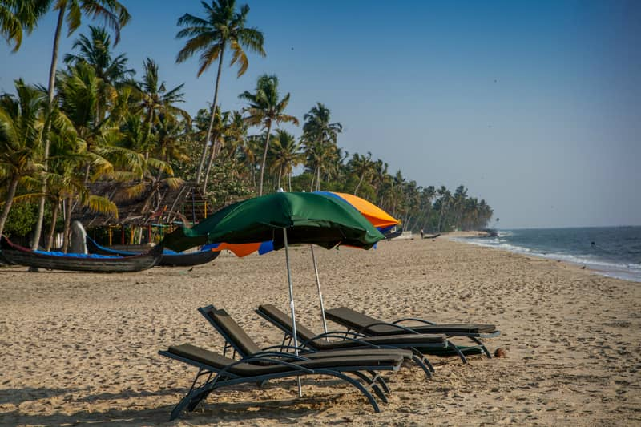

Alappuzha

Alappuzha is a Land Mark between the broad Arabian sea and a network of rivers flowing into it.In the early first decade of the 20th Century the then Viceroy of the Indian Empire, Lord Curzon made a visit in the State to Alleppey, now Alappuzha. Fascinated by the Scenic beauty of the place, in joy and amazement, he said, “Here nature has spent up on the land her richest bounties”. In his exhilaration, it is said, he exclaimed, “Alleppey, the Venice of the East”. Thus the sobriquet found its place in the world Tourism Map. The presence of a port and a pier, criss -cross roads and numerous bridges across them, a long and unbroken sea coast might have motivated him to make this comparison. Alleppey has a wonderful past. Though the present town owes its existence to the sagacious Diwan Rajakesavadas in the second half of 18th century, district of Alappuzha figures in classified Literature. Kuttanad, the rice bowl of Kerala with the unending stretch of paddy fields, small streams and canals with lush green coconut palms , was well known even from the early periods of the Sangam age. History says Alappuzha had trade relations with ancient Greece and Rome in B.C and in the Middle Ages.
Hot Tourist Spots
Vembanad Lake

Marari Beach
